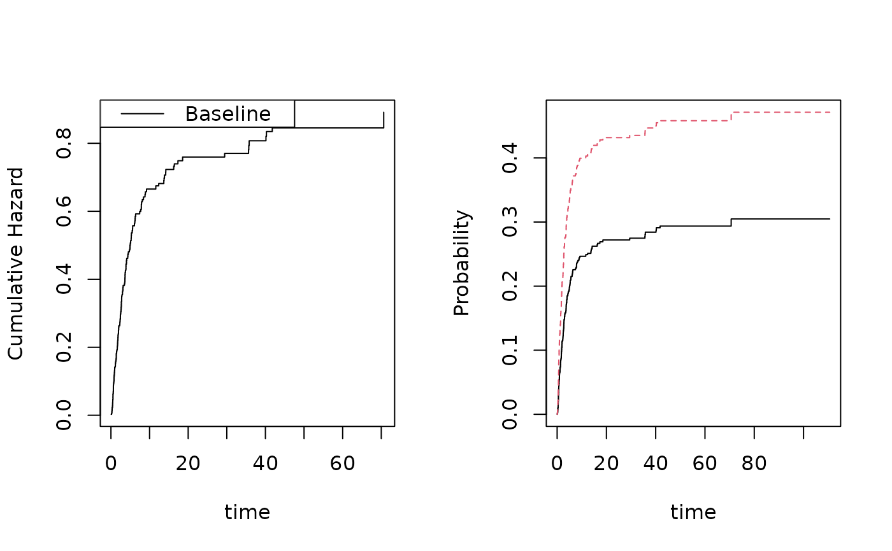
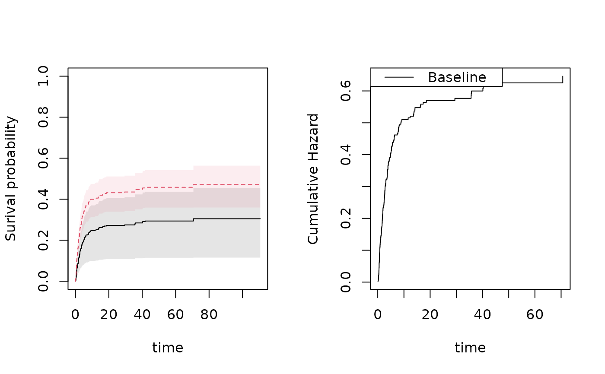
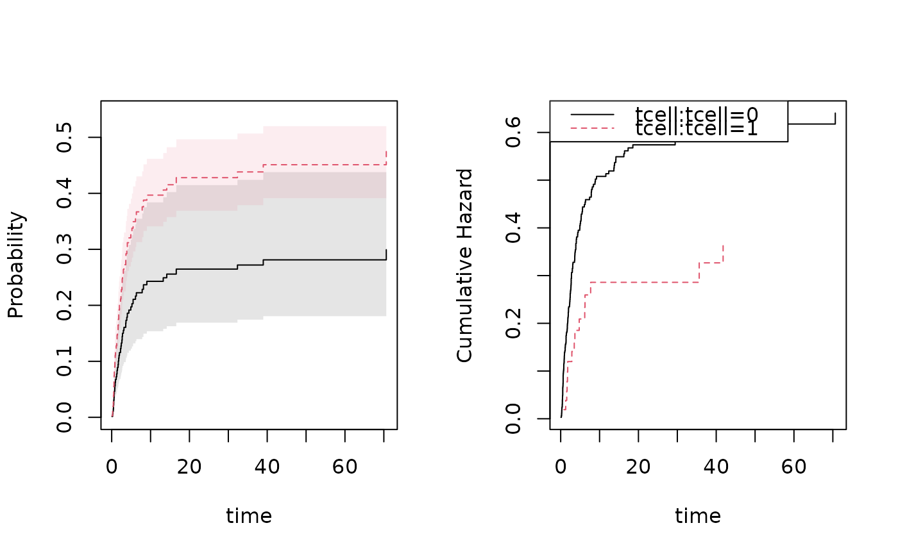

Fits a regression model for the cumulative incidence function (CIF) in the presence of competing risks. Supports two link functions:
propodds=1(default): Logistic link model (logit of CIF), providing Odds Ratio (OR) interpretations.propodds=NULL: Fine-Gray (cloglog) regression model, providing subdistribution hazard ratio interpretations.
Usage
cifreg(
formula,
data,
propodds = 1,
cause = 1,
cens.code = 0,
no.codes = NULL,
death.code = NULL,
...
)Arguments
- formula
Formula with an 'Event' outcome.
- data
Data frame containing the variables.
- propodds
Logical; if
1(default), fits the logit link model. IfNULL, fits the Fine-Gray model.- cause
Cause of interest (default is 1).
- cens.code
Code for censoring (default is 0).
- no.codes
Event codes to be ignored when identifying competing causes (useful for administrative censoring).
- death.code
Codes for death (terminal events). If
NULL, defaults to all remaining codes (excludingcause,cens.code, andno.codes).- ...
Additional arguments passed to
recreg.
Value
An object of class "cifreg" (extending "phreg") containing:
- coef
Estimated coefficients.
- var
Robust variance-covariance matrix.
- iid
Influence functions for the coefficients.
- cumhaz
Cumulative incidence estimates.
- propodds
Indicator of the link function used.
Details
For the Fine-Gray model, the score equations are:
$$ \int (X - E(t)) Y_1(t) w(t) dM_1 $$
summed over clusters and returned as iid.naive (multiplied by the inverse of the second derivative).
Here, $$w(t) = G(t) (I(T_i \wedge t < C_i)/G_c(T_i \wedge t))$$,
$$E(t) = S_1(t)/S_0(t)$$, and $$S_j(t) = \sum X_i^j Y_{i1}(t) w_i(t) \exp(X_i^T \beta)$$.
The full influence function (IID decomposition) for the beta coefficients includes a censoring term:
$$ \int (X - E(t)) Y_1(t) w(t) dM_1 + \int q(s)/p(s) dM_c $$
which is returned as the iid component.
For the logistic link model, standard errors may be slightly underestimated because uncertainty from the
recursive baseline estimation is not fully accounted for. For smaller datasets, it is recommended to use
the prop.odds.subdist function from the timereg package (which uses more efficient weights)
or to bootstrap the standard errors.
Examples
## data with no ties
data(bmt,package="mets")
bmt$time <- bmt$time+runif(nrow(bmt))*0.01
bmt$id <- 1:nrow(bmt)
## logistic link OR interpretation
or=cifreg(Event(time,cause)~tcell+platelet+age,data=bmt,cause=1)
summary(or)
#>
#> n events
#> 408 161
#>
#> 408 clusters
#> coefficients:
#> Estimate S.E. dU^-1/2 P-value
#> tcell -0.709607 0.331978 0.274926 0.0326
#> platelet -0.455297 0.236017 0.187920 0.0537
#> age 0.391175 0.098036 0.083670 0.0001
#>
#> exp(coefficients):
#> Estimate 2.5% 97.5%
#> tcell 0.49184 0.25659 0.9428
#> platelet 0.63426 0.39936 1.0073
#> age 1.47872 1.22022 1.7920
#>
par(mfrow=c(1,2))
plot(or)
nd <- data.frame(tcell=c(1,0),platelet=0,age=0)
por <- predict(or,nd)
plot(por)

## approximate standard errors
por <-mets:::predict.phreg(or,nd)
plot(por,se=1)
## Fine-Gray model
fg=cifregFG(Event(time,cause)~tcell+platelet+age,data=bmt,cause=1)
summary(fg)
#>
#> n events
#> 408 161
#>
#> 408 clusters
#> coefficients:
#> Estimate S.E. dU^-1/2 P-value
#> tcell -0.597055 0.270452 0.275783 0.0273
#> platelet -0.426037 0.180707 0.187720 0.0184
#> age 0.343921 0.080270 0.086285 0.0000
#>
#> exp(coefficients):
#> Estimate 2.5% 97.5%
#> tcell 0.55043 0.32396 0.9352
#> platelet 0.65309 0.45831 0.9307
#> age 1.41047 1.20514 1.6508
#>
##fg=recreg(Event(time,cause)~tcell+platelet+age,data=bmt,cause=1,death.code=2)
##summary(fg)
plot(fg)

nd <- data.frame(tcell=c(1,0),platelet=0,age=0)
pfg <- predict(fg,nd,se=1)
plot(pfg,se=1)
## bt <- iidBaseline(fg,time=30)
## bt <- IIDrecreg(fg$cox.prep,fg,time=30)
## not run to avoid timing issues
## gofFG(Event(time,cause)~tcell+platelet+age,data=bmt,cause=1)
sfg <- cifregFG(Event(time,cause)~strata(tcell)+platelet+age,data=bmt,cause=1)
summary(sfg)
#>
#> n events
#> 408 161
#>
#> 408 clusters
#> coefficients:
#> Estimate S.E. dU^-1/2 P-value
#> platelet -0.424645 0.180792 0.187822 0.0188
#> age 0.342094 0.079862 0.086285 0.0000
#>
#> exp(coefficients):
#> Estimate 2.5% 97.5%
#> platelet 0.65400 0.45887 0.9321
#> age 1.40789 1.20390 1.6465
#>
plot(sfg)

### predictions with CI based on iid decomposition of baseline and beta
### these are used in the predict function above
fg <- cifregFG(Event(time,cause)~tcell+platelet+age,data=bmt,cause=1)
Biid <- iidBaseline(fg,time=20)
pfg1 <- FGprediid(Biid,nd)
pfg1
#> pred se-log lower upper
#> [1,] 0.2692822 0.22756923 0.1723853 0.4206442
#> [2,] 0.4344567 0.07477993 0.3752267 0.5030363